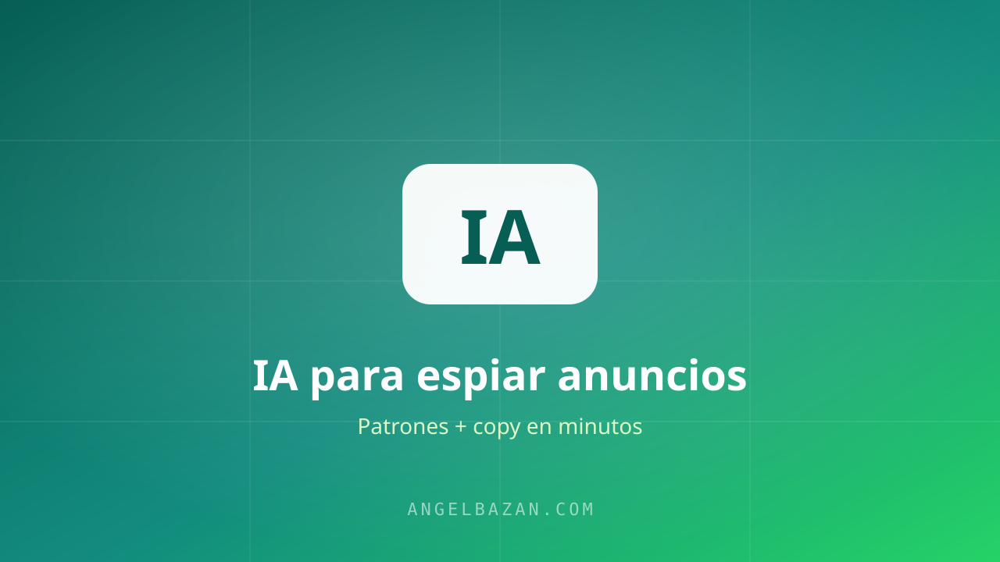

Cómo usar IA para espiar anuncios en la Biblioteca de Meta y encontrar ofertas más rápido
Descubre cómo uso la inteligencia artificial para espiar anuncios en la Biblioteca de Meta, extraer palabras clave y detectar los mejores embudos para modelar.
En este artículo
Espiar anuncios a mano funciona, pero es lento: mirar 20 anuncios, copiar textos, comparar ángulos y sacar conclusiones te toma horas. Con IA el mismo trabajo baja a minutos. No para reemplazar tu criterio, sino para multiplicar tu velocidad de análisis.

Por qué usar IA para espiar anuncios
Tres razones concretas:
- Velocidad: pegas 10-20 textos de anuncios y la IA los resume y compara en segundos.
- Detección de patrones: la IA encuentra ángulos y palabras que se repiten entre ofertas ganadoras y que a ojo se te escapan.
- Reescritura: en el mismo paso te propone variaciones de copy para tus anuncios, ya adaptadas a tu oferta.
El flujo completo: biblioteca → IA → embudo
- Entra a la Biblioteca de Anuncios y selecciona 10-20 anuncios activos de tu mercado.
- Copia el texto principal y el destino del clic de cada uno.
- Pégalos en ChatGPT, Claude o Gemini con el prompt de abajo.
- Pide el resumen de patrones y las variaciones de copy.
- Elige 1-2 ángulos y muévelos a tu embudo de WhatsApp para testear.
El prompt exacto que uso para analizar anuncios
"Eres un estratega de performance marketing. Te voy a pasar los textos de anuncios activos de la Biblioteca de Anuncios de Meta de [tu mercado]. Tarea 1: identifica los patrones comunes (ángulo principal, promesa, mecanismo, tono, llamado a la acción). Tarea 2: detecta qué textos usan el envío a WhatsApp como CTA. Tarea 3: propón 5 variaciones de copy para mi oferta [describe tu oferta] manteniendo los patrones ganadores. No inventes datos: trabaja solo con lo que te doy."
Copia ese prompt y ajústalo a tu caso. Funciona mejor si primero le das contexto de tu oferta y tu cliente ideal.
Cómo detectar patrones entre 20 anuncios ganadores
Después del análisis, la IA te devuelve algo parecido a esto:
- El 70% abre con el dolor en el titular ("cansado de perder ventas…").
- El 80% usa prueba social o cifras en el cuerpo del texto.
- La mitad manda el tráfico directo a WhatsApp en vez de a una landing page.
- El mecanismo repetido: "método paso a paso" o "sistema automatizado".
Ese resumen es oro puro: ya no estás adivinando qué funciona, estás apostando con datos.
El límite: la IA no decide por ti
La IA te acelera, pero no sabe si tu mercado, tu precio o tu producto encajan con el ángulo que encontró. La decisión final —qué oferta, qué público, cuánto presupuesto— sigue siendo tuya. Úsala como analista junior brillante y rápido, nunca como estratega en jefe.
Relacionado: por qué la IA inventa información y cómo evitar que te engañe con datos falsos.
Consejos prácticos para no perderte en el análisis
El análisis de anuncios con IA puede volverse un pantano de datos si no lo ordenas. Estas son las reglas que mantienen el proceso rápido y útil:
- Selecciona con criterio antes de pegar: 10 anuncios de tu mercado valen más que 40 de todo el país. Filtra por país, por tipo de oferta y por antigüedad antes de copiar nada.
- Separa el texto del destino: el copy y el CTA son dos análisis distintos. Pregúntale a la IA qué hacen los que envían a WhatsApp vs. los que envían a landing: esa diferencia define tu estrategia.
- Pide porcentajes, no opiniones: en vez de "qué te parece", pide "qué porcentaje abre con el dolor, qué porcentaje usa cifras". Las cuantificaciones son accionables.
- Verifica lo que encuentres: si la IA afirma un patrón, vuelve a los anuncios y confírmalo. La IA resume, no garantiza.
Ese análisis alimenta directo tus titulares: los patrones de la competencia se transforman en titulares que venden, y el enfoque completo de modelar embudos está en qué es el funnel hacking. Para automatizar la comparación de textos, prueba el analizador de copy de la competencia.
Preguntas frecuentes
¿Cuántos anuncios necesito para sacar conclusiones?
Entre 10 y 20 de un mismo mercado. Menos no da patrones; más satura el análisis y repite lo mismo. La calidad de la selección importa más que la cantidad.
¿Qué modelo de IA es mejor para este análisis?
Cualquiera de los grandes funciona; lo importante es el prompt con contexto y tareas separadas. Para textos largos de anuncios, Claude suele ser más preciso con las instrucciones.
¿Espiar anuncios sigue funcionando si todos lo hacen?
Sí, porque la mayoría copia textos y nadie analiza la estructura ni el embudo completo. El que gana no es el que copia el anuncio, sino el que modela el sistema detrás.

Angel Bazán
Especialista en funnels, Meta Ads y WhatsApp + IA. Ayudo a negocios a vender más combinando tráfico pagado con conversaciones automatizadas.
Conoce más sobre mí →Aprende a crear y vender productos digitales con Meta Ads, WhatsApp e IA
Clases en vivo, estrategias y recursos para construir tu sistema desde cero. 🚀
Únete gratis al grupo